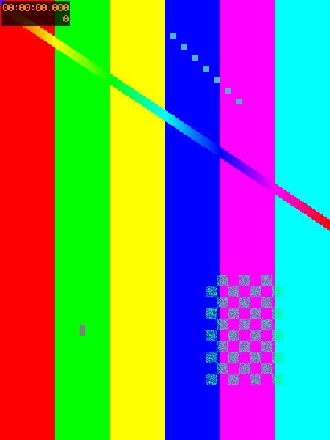

네컷 실험 페이지
이 폰·이 앱에서 카메라, 누끼, 2초 녹화, 저장이 되는지 봅니다. 위에서부터 차례로 눌러 주세요. 끝나면 맨 아래 결과를 캡처해서 보내 주세요.
1. 카메라
화면을 두 손가락으로 벌리면 줌, 한 번 누르면 그 자리에 초점(지원하는 폰만).
2. 실시간 누끼
켜면 위 화면이 사람만 남고 보라 배경으로 바뀝니다. 머리카락 가장자리를 봐 주세요.
3. 2초 녹화
지금 위에 보이는 화면 그대로(좌우반전·누끼 포함) 2초를 녹화합니다.
4. 저장
누른 뒤 사진첩(갤러리)에 실제로 들어갔는지 확인해 주세요.
위 사진을 길게 눌러 저장도 되는지 봐 주세요.
5. 서버 주소(https) 파일 저장
완성본이 서버에 올라간 상황을 흉내 냅니다. 카메라 없이 바로 해 볼 수 있어요. 사진첩에 들어갔는지 확인해 주세요.

아래 두 사진을 각각 길게 눌러 저장해 보세요. (왼쪽 = 서버 주소, 오른쪽 = 페이지 안에서 만든 사진)

영상 오른쪽 아래 메뉴(⋮)에 다운로드가 있으면 눌러 보세요.